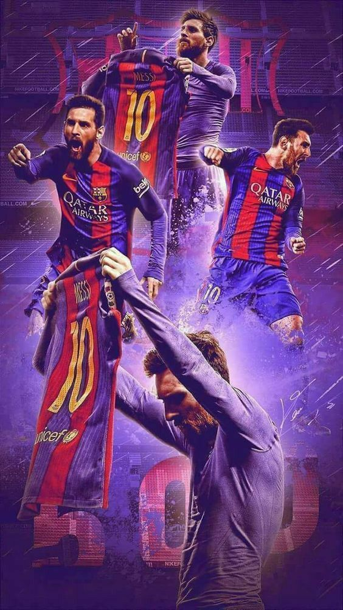
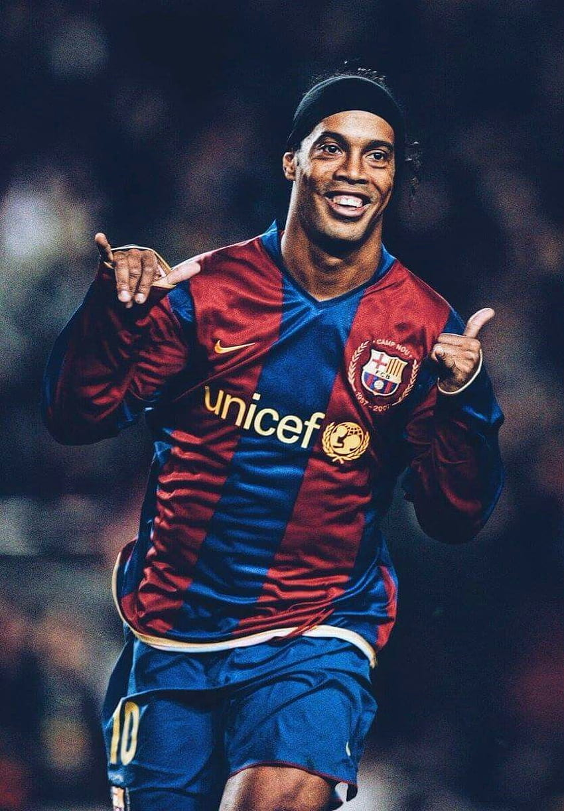
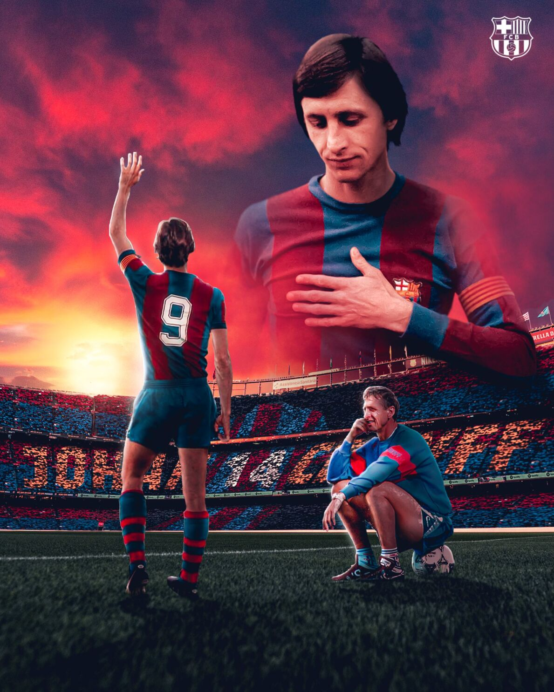

Mejores jugadores de su historia
Top 3:



Video Destacado
Nuevos videos
Ronaldinho 10
Lionel Messi
Johan cruyff
Diego Maradona
Himno del FC Barcelona
Los tres jugadores históricos más destacados en la historia del FC Barcelona son:
- Lionel Messi: Apodado “La Pulga”, ha sido una figura central en el FC Barcelona durante más de una década.
- El carismático brasileño dejó una huella imborrable en el club con su magia y creatividad en el campo.
- Con su estilo de juego único y su visión táctica, revolucionó el fútbol en el FC Barcelona tanto como jugador como entrenador.